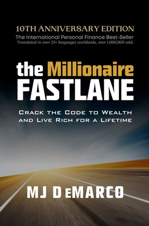

Contents
About the book

Introduction
In The Millionaire Fastlane, MJ DeMarco challenges the conventional wisdom of wealth accumulation. Rejecting the traditional path of working a 9-to-5 job, saving diligently, and retiring at 65, DeMarco proposes an alternative route to financial freedom—one that emphasizes entrepreneurship, value creation, and leveraging time effectively. This review explains the core concepts of DeMarco's Fastlane strategy, offering insights into how individuals can accelerate their journey to wealth.
About the Author
MJ DeMarco is an entrepreneur who achieved financial independence by founding and selling a successful online limousine booking platform. His firsthand experience in building a business that generated substantial wealth in a relatively short period forms the foundation of The Millionaire Fastlane. DeMarco's writing is characterized by its candidness and a no-nonsense approach to wealth creation.
Summary of The Millionaire Fastlane
DeMarco introduces three financial roadmaps:
- The Sidewalk: A path marked by living paycheck to paycheck, with little regard for financial planning or future stability.
- The Slowlane: The traditional route of securing a stable job, saving consistently, and investing with the hope of retiring comfortably in later years.
- The Fastlane: An entrepreneurial approach focused on creating scalable systems that generate significant income and wealth in a shorter timeframe.
DeMarco advocates for the Fastlane, emphasizing that wealth is not solely about money but also about time and freedom.
Key Concepts and Insights
1. Wealth Equation
DeMarco redefines wealth with the equation:
Wealth = Net Profit + Asset Value
This formula underscores the importance of building assets that generate income and appreciate over time, rather than relying solely on earned income.
2. The Five Fastlane Commandments (CENTS)
To qualify as a Fastlane business, DeMarco outlines five essential criteria, collectively known as the CENTS framework:
- Control: The entrepreneur must have direct control over the business’s operations, direction, and revenue generation. This eliminates dependence on third parties such as bosses, clients, or platforms that can dictate your outcomes. For example, owning your website rather than relying solely on a marketplace gives you more pricing, branding, and customer engagement power.
- Entry: The business should have significant barriers to entry, which protect it from quick competition. This could mean specialized knowledge, high startup costs, or technical complexity. Businesses that anyone can start with little effort are easily saturated and thus less profitable over time.
- Need: The product or service must solve a real problem or fulfill a strong market demand. Businesses built around solving genuine pain points or serving unmet needs are more likely to gain traction than those focused solely on passion or trends.
- Time: The business model must allow you to disconnect your income from your personal time. This means creating systems, products, or platforms that earn money continuously—such as digital courses, software, or scalable e-commerce—rather than selling time-for-money like freelancing or hourly consulting.
- Scale: The business must be capable of reaching and serving a large audience. Scalable businesses are not limited by geography, local demand, or manual labor constraints. Online platforms, global distribution models, and products with digital delivery fulfill this criterion well.
By following the CENTS model, entrepreneurs can build businesses that generate sustainable, exponential income while allowing for lifestyle freedom and long-term impact.
3. Producer vs. Consumer Mindset
Transitioning from a consumer to a producer mindset is pivotal and represents a foundational mental shift for anyone aiming to build wealth. The consumer mindset is reactive—it’s centered around spending, entertainment, and immediate gratification. People with this mindset typically trade their income for things that depreciate in value or bring fleeting satisfaction.
On the other hand, a producer mindset is proactive and focused on creation. Instead of asking, "What can I buy?" producers ask, "What can I create that others will buy?" This perspective encourages innovation, entrepreneurship, and value generation. Whether it's designing a product, offering a service, or publishing content, producers look to solve problems, fill gaps, and improve lives—turning their time and ideas into scalable solutions.
DeMarco argues that this shift is what separates Fastlane thinkers from the rest. Producers generate wealth because they build assets that serve others. It’s not just about starting a business—it’s about changing the way you think about your time, talents, and the impact you can make in the marketplace.
4. Execution Over Ideas
An idea holds no value without execution. DeMarco emphasizes that the world is filled with dreamers, but very few doers. Everyone has ideas, but only those who put in the effort to turn those ideas into real-world solutions achieve success. Execution is the true differentiator—it involves commitment, consistency, and the willingness to face setbacks and learn from them. Without execution, an idea is just a thought; with execution, it becomes a business, a solution, or a product that can change lives. DeMarco warns against the illusion that ideas alone create wealth—only through disciplined, strategic action can true results be realized.
Real-Life Application
DeMarco's own journey exemplifies the Fastlane principles in action. After identifying a common frustration in the marketplace—the lack of a centralized online platform for limousine bookings—he launched Limos.com, a website that allowed users to easily search, compare, and reserve limousine services. What began as a side project grew steadily as he refined the platform, improved user experience, and expanded its reach across cities.
By focusing on solving a real-world problem and building a scalable, web-based solution, DeMarco leveraged the CENTS principles effectively. He retained control over the platform, entered a market with moderate entry barriers, solved a clear customer need, disconnected his income from hours worked, and scaled nationally without a large staff or physical infrastructure. Eventually, he sold the business, achieving financial freedom before the age of 35. His story serves not only as validation of the Fastlane theory but also as a motivational blueprint for aspiring entrepreneurs to build wealth through problem-solving and intelligent system design.
Critiques of the Book
While The Millionaire Fastlane offers valuable insights and a refreshing challenge to conventional financial narratives, some readers may find DeMarco's tone overly brash or even dismissive of more traditional paths like the Slowlane. His critique of the 'get-a-job-save-invest' model is at times aggressively worded, which may alienate readers who have found value in more conservative financial strategies. Furthermore, the book is notably lengthy and often reiterates key points such as the CENTS framework and the flaws of the Slowlane approach multiple times. This repetition, while reinforcing the core concepts, can feel redundant to readers who prefer more concise writing. Nonetheless, these stylistic elements are often outweighed by the clarity and conviction of DeMarco's central message: wealth can be engineered through purposeful, value-driven entrepreneurship that prioritizes speed, scale, and autonomy.
Who Should Read This Book?
- Aspiring entrepreneurs seeking a roadmap to financial independence.
- Individuals disillusioned with traditional career paths and retirement plans.
- Readers interested in building scalable businesses that generate passive income.
Final Verdict
The Millionaire Fastlane is a compelling read for those ready to challenge conventional financial wisdom and take control of their wealth-building journey. DeMarco's emphasis on entrepreneurship, value creation, and strategic execution provides a practical framework for achieving financial freedom.
Actionable Takeaways
- Evaluate your current financial roadmap and consider if the Fastlane approach aligns with your goals.
- Identify market needs that you can address through scalable business solutions.
- Develop a business model that adheres to the CENTS commandments.
- Focus on execution and continuous improvement to drive your business forward.
Conclusion
MJ DeMarco's The Millionaire Fastlane offers a thought-provoking perspective on wealth creation, challenging readers to rethink traditional financial strategies. By embracing entrepreneurship and focusing on delivering value, individuals can accelerate their journey to financial independence and enjoy the freedom that comes with it.
Have you read The Millionaire Fastlane? Share your thoughts and experiences in the comments below!
More book reviews
Other reviews on Chmltech: Atomic Habits; The E-Myth Revisited; The ONE Thing; The Psychology of Money; The Nvidia Way; Clear Thinking; The Art of the Deal vs The Art of War.
Read next: The Psychology of Money by Morgan Housel: Book Review; The E-Myth Revisited by Michael Gerber: Book Review; The ONE Thing by Keller and Papasan: Book Review.